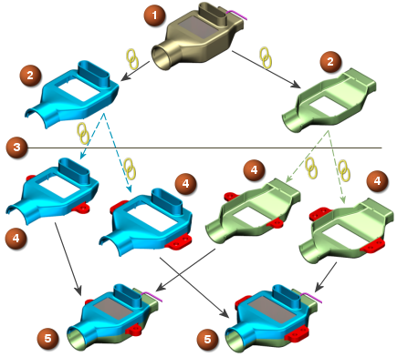

练习：实现系统工程
预计完成此练习需要：15–22 分钟
在这个练习中，您将根据设计装配中的种子部件来创建产品部件。种子部件中包含在所有产品部件中必须存在的全部特征，也称为起始部件，必须包含不同的安装凸起，以便安装到不同汽车的座椅加热器外壳上。产品部件必须维持它们与原始设计装配之间的 WAVE 链接，因为原始设计装配中包含了外壳的总体大小与形状定义。
|
 |
|
 装配/组件关系
装配/组件关系 WAVE 链接
WAVE 链接开始 实现系统工程